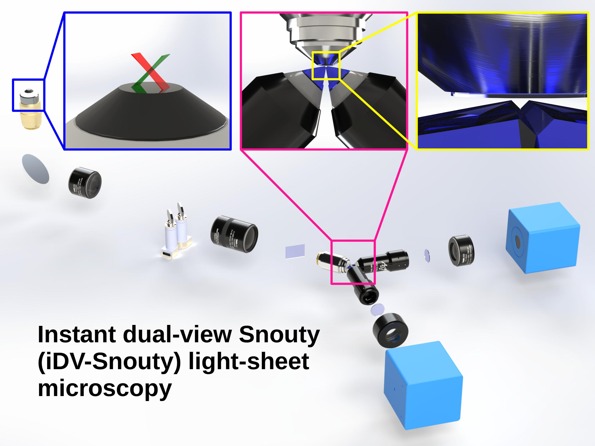
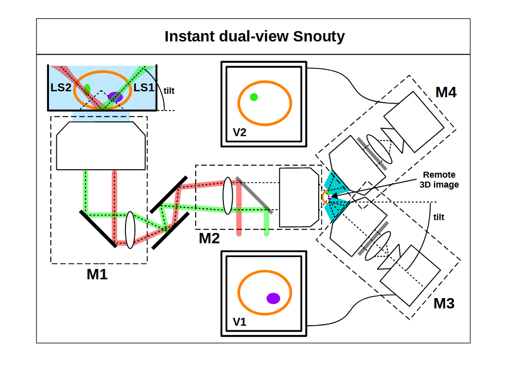
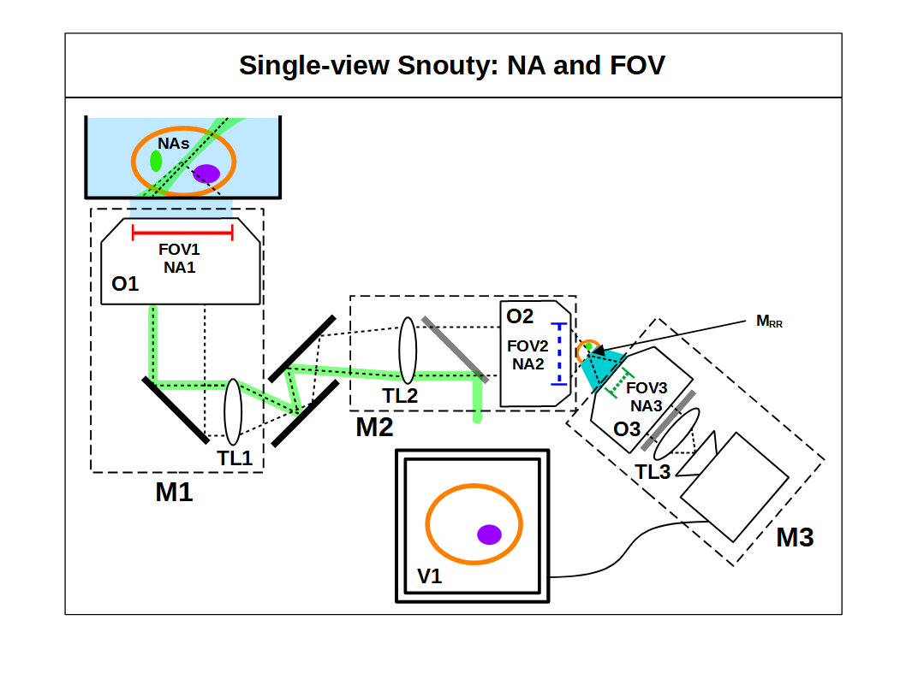
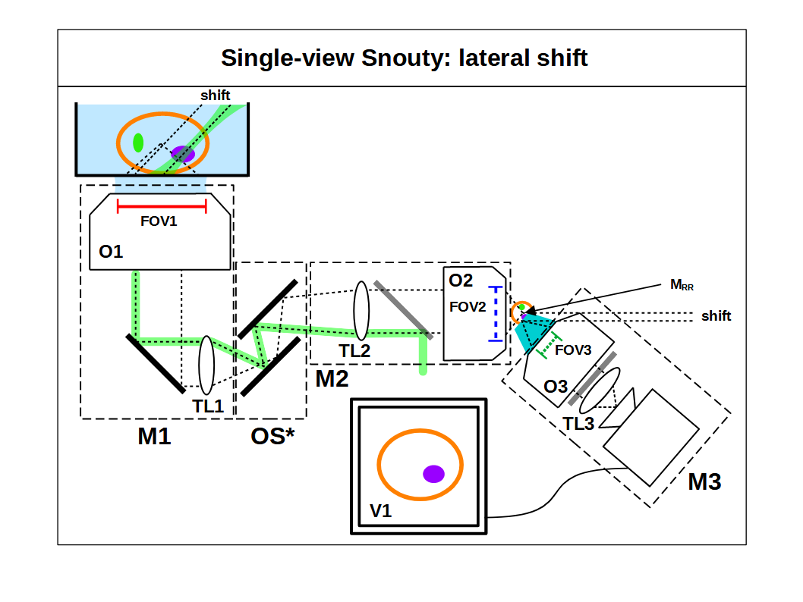
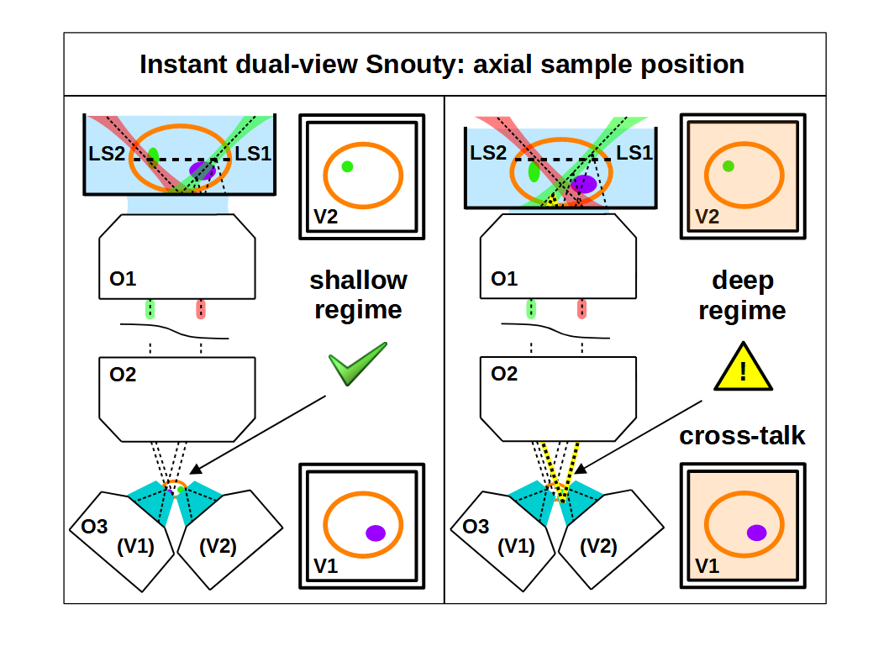
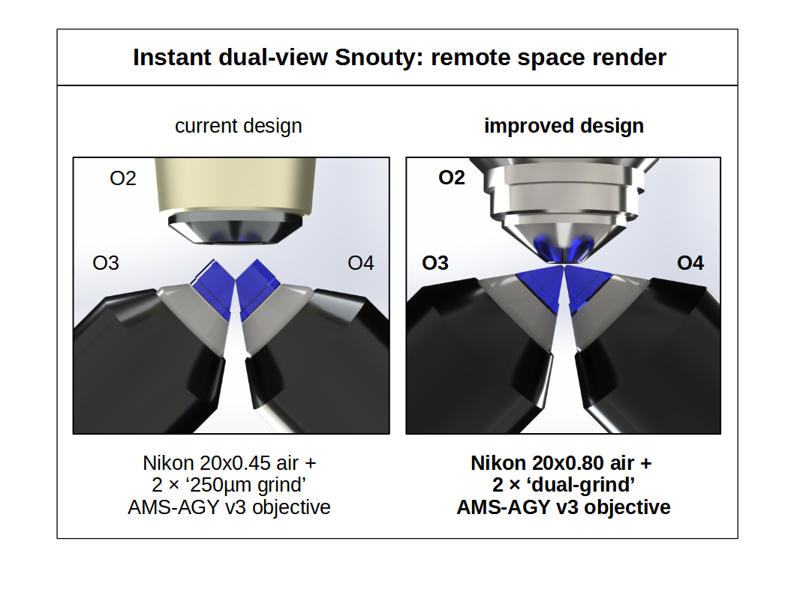
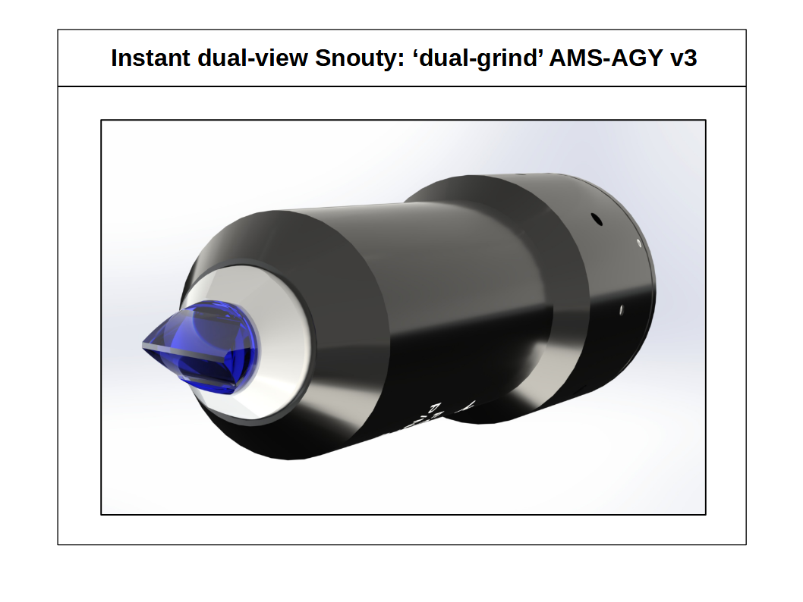
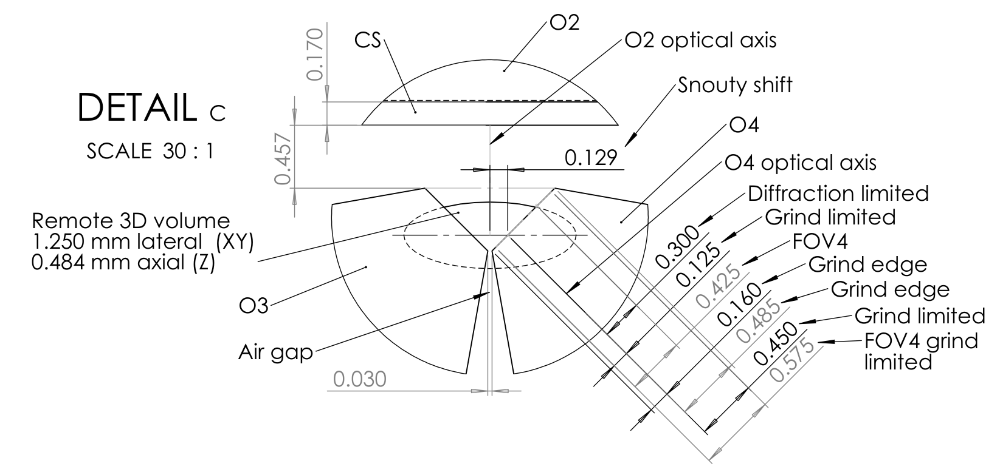

This project is maintained by amsikking from Calico Automation, and was funded by Calico Life Sciences LLC
* Institutional email: amsikking+iDV-Snouty@calicolabs.com ; Permanent email: amsikking+iDV-Snouty@gmail.com
Light-sheet fluorescence microscopy (LSFM) has emerged as a leading technology for fast and gentle 3D bioimaging, but traditional implementations are not compatible with standard samples or microscopes. Oblique plane microscopy (OPM) is an attractive variant of LSFM that avoids orthogonal objectives at the sample, but has a diminished numerical aperture (NA). Snouty light-sheet microscopy improves on OPM by using a special glass tipped objective (e.g. AMS-AGY v1) and a carefully selected optical train to retain the maximum NA. A common challenge in LSFM is overcoming sample induced image artifacts from refraction, scattering and absorption of the light-sheet and emission light. A multi-view approach can alleviate image artifacts and was used by the dOPM and DaXi microscopes in a dual-view regime. The DaXi microscope used the AMS-AGY v2 objective to achieve a larger field of view (FOV), and targeted larger samples where image artifacts are more pronounced. Both dOPM and DaXi used additional optics in series and moving parts to realize the dual-view mode, reducing transmission efficiency and lowering acquisition rates. Here we show a new instant dual-view Snouty (iDV-Snouty) light-sheet microscope design with no additional optics in series or moving parts, and a volumetric acquisition rate that approaches double that of previous methods. The new arrangement allows single-view Snouty microscopes to be upgraded to iDV-Snouty without compromise, offering a strict technical upgrade to a standard system. We present the basic theory and a current example design that uses all stock parts (NA 0.6) and an improved design with a newly proposed ‘dual-grind’ AMS-AGY v3 objective to achieve a system NA of 1.0. Both designs have orthogonal dual-views with a FOV up to 830 \(\times\) 1100 \(\times\) 306 μm (X \(\times\) Y \(\times\) Z) \(\times\) 2 views.

R&D engineers, microscope users, builders and developers.
First published: July 20, 2026 (This article is not yet peer-reviewed)
Cite as: doi:10.5281/zenodo.21457037
Light-sheet fluorescence microscopy (LSFM) has emerged as a leading technology for fast and gentle 3D imaging of biological samples [Girkin 2018] . In traditional LSFM there are two objectives near the sample, one objective to deliver the light-sheet and another orthogonal objective to image the fluorescent plane created by the light-sheet [Huisken 2004] . A major drawback of traditional LSFM is that the orthogonal objective arrangement is not compatible with standard samples like slides, dishes, multi-well plates and microfluidic devices, or with standard microscope platforms like epi-fluorsecent widefield microscopes.
Oblique plane microscopy (OPM) is a special variant of LSFM that uses only one objective near the sample [Dunsby 2008] . In OPM the primary objective is used with some extra downstream optics to simultaneously deliver a light-sheet to the sample and image the fluorescence emission on an ‘oblique’ plane. Because OPM is fully compatible with standard samples and microscope platforms it offers LSFM in a convenient format and has seen many recent advances [Kim 2023].
The downstream optics in OPM are based on remote refocus (RR) optics [Botcherby 2007] , which create a remote 3D image of the sample with a pair of axially aligned microscopes (M1 and M2). In a traditional RR the 3D image is then collected as a series of 2D images by a 3rd microscope (M3) that is also axially aligned [Millett-Sikking 2018] . In OPM M3 is intentionally tilted away from the optical axis in order to image an oblique plane in the remote 3D image, and therefore an oblique plane in the sample where a light-sheet can be delivered. Tilting M3 in the remote space is what enables OPM but has the unwanted side effect of losing light between M2 and M3, since they are no longer axially aligned and light simply exits the optical train at this interface. In practice, this means that OPM operates at a lower effective numerical aperture (NA) and has a reduced resolution and signal compared to a stand alone microscope (i.e. M1).
To alleviate the loss of light in OPM a special glass tipped ‘Snouty’ objective (e.g. AMS-AGY v1) can be used with a carefully selected optical train to retain the maximum NA [Millett-Sikking 2019, E. Sapoznik 2020] . Snouty light-sheet microscopy has seen significant uptake (e.g. Snoutclub), including structured illumination [Chen 2022] , adaptive optics [Mcfadden 2024] , super resolution [Boden 2024] and multi-immersion variants [Chen 2025] . In all versions, maximizing the instantaneous field of view (FOV) for a given NA is a primary figure of merit for the microscope design, which led to the development of a large FOV AMS-AGY v2 objective for the DaXi microscope [Yang 2022].
A common challenge in LSFM is overcoming sample induced refraction, scattering and absorption of the light-sheet that often leads to striping or shadowing artifacts in the image [Power 2017] . An effective way to alleviate shadowing artifacts is to use multi-directional light-sheets [Huisken 2007] with multiple views [Tomer 2012] and fuse the images in post processing. A dual-view version of this approach was used in the dOPM [Sparks 2020] and DaXi microscopes, where 2 orthogonal views were collected with light-sheets, all within the same primary objective. In both dOPM and DaXi additional optics in series and extra time were needed to achieve the dual-view mode, reducing transmission efficiency and lowering acquisition rates.
Here we show a new instant dual-view Snouty (iDV-Snouty) light-sheet microscope design with no additional optics in series and a volumetric acquisition rate that approaches double that of previous methods (Figure 1). The method allows single-view Snouty light-sheet microscopes to be upgraded to iDV without compromise, offering a strict technical upgrade to a standard system. We present the basic theory and a large FOV example design where the iDV mode is most attractive; a current version with the latest ‘250 μm grind’ AMS-AGY v3 objective and an improved version with a newly proposed ‘dual-grind’ AMS-AGY v3 objective.

iDV-Snouty light-sheet microscopy is a straightforward concept; take a regular Snouty light-sheet microscope [Millett-Sikking 2019] and duplicate the 3rd microscope (M3) to create a 4th microscope (M4) which shares the remote 3D image produced by the first 2 microscopes (M1 and M2). M3 and M4 can each image a tilted plane in the sample simultaneously and dual light-sheets can be simultaneously delivered on these image planes (Figure 1). The rest of this section explores how this arrangement can work and how to optimize it, with subsections on single-view Snouty basics, choosing the primary objective (O1), constraints on numerical aperture (NA), preserving space-bandwidth product (SBP), constraints on field of view (FOV), lateral shift for dual-view, 3D acquisition rate boost and axial sample position regimes.
More practically minded readers can skip the theory and go straight to the example design.
At a high level a regular Snouty light-sheet microscope is made from 3 microscopes in series; M1, M2 and M3. Each microscope has an objective (O) and a tube lens (TL) pair; O1-TL1 for M1, TL2-O2 for M2 and O3-TL3 for M3 (Figure 2). M1 and M2 are configured in a special back-to-back arrangement (O1-TL1-TL2-O2) that is based on remote refocus (RR) optics, which collect light from the sample at O1 and create a remote 3D image of the sample at O2 [Botcherby 2007] . A critical feature of RR is that the remote 3D image has a uniform magnification in all directions, specifically the magnification of the remote space \(\text{M}_{\text{RR}}\) should be set to: \[ \text{M}_{\text{RR}} = \frac{n_s}{n_2} \tag{1} \] where \(n_s\) is the refractive index of the sample and \(n_2\) is the refractive index of the remote 3D image formed at O2 [Millett-Sikking 2022] . In practice O2 is an air objective (\(n_2 = 1\)) and \(n_s\) is usually limited to the useful biological range of ~1.33 to ~1.51 (i.e. watery to oily) and so the remote 3D image has low magnification (i.e. ~1.33–1.51x). Due to the low value of MRR a 3rd microscope (M3) is used to re-image the remote space and magnify it by an appropriate amount for detection (i.e. to match camera pixel size for Nyquist sampling).

M1 and M2 share the same optical axis, but M3 is intentionally tilted with respect to M2 so that it images a tilted plane in the remote 3D space, and therefore a tilted plane in the sample at O1 (Figure 1). The tilt angle between M2 and M3 must be set high enough so that the tilted plane in the sample is within the angular range of O1, which then enables a light-sheet to be coupled into O1 and made coincident with the tilted plane. The role of the Snouty objective is to allow the tilt operation between M2 and M3 (and therefore between O2 and O3) with minimal loss of light.
Selecting O1 is an important design decision since it predetermines the maximum NA and field of view (FOV) available to the microscope. High NA is important for resolution and light collection efficiency, which comes from the increased angular collection at the sample by O1 and improved transmission from a reduced tilt of the Snouty objective at the O2-O3 interface [Sommernes 2024]. A large FOV is important for maximizing the size of the instantaneous image that can be captured. Ideally we would have both a high NA and a large FOV simultaneously, but in practice we’re limited by the optical space-bandwidth product (SBP) to choosing a realizable regime that is a trade-off between NA and FOV.
High NA small FOV designs (e.g. O1 = 100x1.35 Silicone) have a high resolution and collection efficiency, and a light-sheet that is more orthogonal to the O1 optical axis which can improve z resolution. However, the more orthogonal light-sheet produces shallow volumes which together with the small FOV limits 3D volume size and is only good for small samples (e.g. cells, organelles, etc) [Millett-Sikking 2019].
Low NA large FOV designs (e.g. O1 = 4x0.28 Air) have a low resolution and collection efficiency, a less orthogonal light-sheet that barely improves z resolution and high transmission losses at the O2-O3 interface. However the less orthogonal light-sheet enters the sample at a steep angle which together with the large FOV yields large 3D volumes that are good for large samples (e.g. organoids, embryos, tissues, expanded samples, etc) [Hoffmann 2019].
The middle ground of medium-high NA and FOV designs (e.g. O1 = 20x1.0, or 40x1.15 water) are an attractive compromise [Yang 2022, Chen 2025 ] . The resolution loss compared to the highest NA alternatives is minor, the transmission efficiency is still high at the O2-O3 interface and the FOV is large enough to accommodate larger samples. Here a multi-view design is appealing since larger samples will typically refract, scatter and absorb the light-sheet more, and the medium-high NA is still high enough to extract 2 orthogonal views (e.g. 90° apart). We will keep this medium-high NA and FOV regime in mind as we consider the theory and example design for the iDV-Snouty microscope.
Here we determine what affects the system numerical aperture (NA) in terms of the critical elements. The maximum available NA for the microscope is set by NA1 at the primary objective and a good design is able to retain NA1 through the rest of the optics (Figure 2). Carefully chosen intermediate optics like tube lenses and mirrors typically do not limit the system NA, but the choice of O1 does put specific constraints on what is required for O2 (i.e. NA2).
Objective lenses (i.e. O1 and O2) are specifically designed to image a 2D object plane (o) to 2D image plane (i) with high fidelity and therefore must adhere to the sine condition [Hecht 2016]: \[ y_i n_i \sin\theta_i = y_o n_o \sin\theta_o \tag{2}\] where \(y_o\) (\(y_i\)), \(n_o\) (\(n_i\)) and \(\theta_o\) (\(\theta_i\)) are the height, refractive index and half angle of the object (image) respectively. We can rewrite the sine condition in terms of the lateral magnification \(\text{M}_{\text{L}} = y_i / y_o \) and numerical aperture \( \text{NA} = n \sin\theta \) as: \[ \text{NA}_i = \frac{\text{NA}_o}{\text{M}_{\text{L}}} \tag{3}\]
In the specific case of RR, we have an image formed at O2 (\(\text{NA}_i = \text{NA}2\)) from and object in the sample (\(\text{NA}_o = \text{NA}_s\)) with a magnification \(\text{M}_{\text{RR}}\), and we can assume that NA1 is preserved in the sample (\(\text{NA}_s = \text{NA}1\)). We can therefore re-write equation 3 as: \[ \text{NA}2 = \frac{\text{NA}1}{\text{M}_{\text{RR}}} \tag{4}\]
For the Snouty objective (O3) the constraint on NA3 comes from aiming to collect substantially all of the light delivered by O2, even with the high tilt angle between O2 and O3. The O2-O3 tilt angle must be set high enough to place the O3 image plane inside NA2, which is essential for imaging a tilted plane in the sample where a light-sheet can be delivered by O1. As a consequence of this requirement the Snouty objective must aim to collect light at O2 over a 90° half angle in immersion \(n_2\): \[ \text{NA}3 = n_2 \tag{5}\]
This is an interesting result; NA2 adjusts with NA1 (equation 4), but there is a fixed requirement on NA3 (equation 5). In other words, if we pick a lower NA1 then NA2 is alleviated but NA3 is not (i.e. the Snouty objective has a harder job).
A key figure of merit for a microscope is the amount of information that can be collected and transferred in a given instance, which is often referred to as the space-bandwidth product (SBP) [Lohmann 1996] : \[ \text{SBP} = 2 y_o \frac{2 \text{NA}}{\lambda} \tag{6}\] where \(\lambda\) is the wavelength, \(2 y_o\) is the linear field of view (FOV) and \(\frac{2 \text{NA}}{\lambda}\) is the reciprocal of the Abbe diffraction limit [Pawley 2006]. So we can see that the SBP is just the ratio of the FOV and resolution of the system, a dimensionless number that tells us how many points we can resolve across the whole linear FOV.
The SBP can be thought of as a measure of quality, complexity or sophistication of the optical design, where more is harder to achieve, and is closely related to optical throughput or 'etendue' [Zhang 2019] . In a system that has optics in series, the optic with the lowest SBP will typically limit the system SBP. In a Snouty light-sheet microscope SBP is typically not limited by intermediate optics (i.e. carefully chosen tube lenses and mirrors) and so the SBP limit comes from the objectives (i.e. O1, O2 and O3). Here we will assume that the objectives receive the same ‘maximal effort’ and therefore preserve the SBP across all 3: \[ \text{SBP}1 = \text{SBP}2 = \text{SBP}3 \tag{7}\] So combining equations 6 and 7 we see that the product of the FOV and NA is preserved in an ideal system: \[ \text{NA}1 \ \text{FOV}1 = \text{NA}2 \ \text{FOV}2 = \text{NA}3 \ \text{FOV}3 \tag{8}\]
For a given NA1 we want the largest possible FOV1 (i.e. max SBP) and we want to preserve this SBP through the rest of the system. However, we have clear constraints on NA (equations 4 and 5) and SBP (equation 8) which constrain FOV2 and FOV3: \[ \text{FOV2} = \text{M}_{\text{RR}} \ \text{FOV1} \tag{9}\] \[ \text{FOV3} = \sin\theta_2 \ \text{FOV2} \tag{10}\]
This is an important result. Firstly we can see that FOV2 relates to FOV1 by a factor of MRR to accommodate the remote 3D image (i.e. ~1.33–1.51 larger). Secondly, we can see that FOV3 relates to FOV2 by a factor of \(\sin\theta_2\). In practice, O2 is an air objective (\(n_2 = 1\)) and so \(\sin\theta_2 = \text{NA}2\) which is at most 0.95 for high NA systems and often approaches 0.75 for medium-high NA systems. So in other words, the Snouty field of view (FOV3) is inherently smaller than FOV2.
We established in the previous subsection that the Snouty field of view (FOV3) is smaller than FOV2 by a factor of NA2. This is a drawback for a single-view system, since O3 will discard a portion of FOV2. However, this feature facilitates the iDV-Snouty design; because FOV3 is smaller than FOV2 the Snouty objective can shift laterally (to some extent) without loss of information (Figure 3). The range over which this lateral motion is penalty free scales with NA2 and is more pronounced for lower NA systems. In the example where NA2 = 0.75 (i.e. medium-high NA designs) FOV2 is 33.33% larger than FOV3, and so FOV2 has a significant amount of extra, unused FOV.

So the key realizations here are that FOV2 has extra space, O3 can shift laterally to make more space, and that we can use the extra space to add a 4th Snouty objective (O4) and a 4th microscope (M4). M3 and M4 can both view the remote 3D image simultaneously from different directions in a dual-view regime. The 2 views are ‘instant’ and can be excited by 2 light-sheets coupled into O1. We call this new mode instant dual-view Snouty (iDV-Snouty) light-sheet microscopy (Figure 1).
In a regular Snouty light-sheet microscope a popular way to acquire 3D volumes is to employ some kind of fast optical scanner (OS*) to sweep the light-sheet back and forth at O1 (Figure 3). This lateral scanning operation enables a series of 2D images of the tilted plane to be acquired at different lateral positions to make up a 3D volume. An optical scanner can come in various forms like lens-galvo-lens [Voleti 2019] , lens-dual-galvo-lens [Chen 2022] , dual-galvo [Chen 2025] and single-galvo (e.g. Scandreas) arrangements. In all cases we typically sweep FOV1 in a symmetric mode about the O1 optical axis.
In previous sequential scan dual-view implementations (e.g. DaXi and dOPM) we have to scan twice (i.e. 1 scan for each view) to get the 2 overlapping volumes that we can fuse in post processing: \[ \text{scan}_{\ \text{DV}} = 2 \ \text{FOV1} \tag{11}\] In the new iDV-Snouty mode we are intentionally shifting M3 and M4 laterally by some fraction of FOV2, and therefore by some fraction of FOV1 (equation 9). As a consequence of this shift the tilted image planes from O3 and O4 are no longer centered on the optical axis of O1 (shown in Figure 3 for O3), and so we now need to scan wider if we want to fully sweep FOV1 with both light-sheets LS1 and LS2 (Figure 1). So whilst the individual views are instant, to get 2 fully overlapping volumes we have to scan iDV-Snouty by: \[ \text{scan}_{\ \text{iDV}} = \text{FOV1} + 2\ \text{shift} / \text{M}_{\text{RR}} \tag{12}\] If we now take the ratio of the sequential and iDV scans (equations 11 and 12) we can get a good indication of the 3D acquisition rate boost we can expect from the iDV mode: \[ \text{3D acquisition}\ \text{rate}\ \text{boost} = \frac{2}{1 + (2\ \text{shift} / \text{M}_{\text{RR}})\ / \ \text{FOV1}} \tag{13}\] So we can see from equation 13 that if the size of the Snouty lateral shift is small compared to FOV1 then the 3D acquisition rate boost approaches 2. Alternatively, in a stage scanning regime where the image series is taken by moving the sample laterally then both views are acquired instantly and the 3D acquisition rate boost is effectively doubled. In all cases because iDV-Snouty avoids additional optics in series and moving parts the 3D acquisition rate boost will be higher in practice. The improved optical transmission enables shorter camera exposures and the 2nd view is acquired without the time penalty of image flipping galvos (DaXi) or mirrors (dOPM).
Typically the axial position of the sample (Z) is adjusted so that the region of interest (ROI) is centered at the nominal focal plane of O1. This arrangement utilizes the ‘sweet spot’ of the optics where the instantaneous FOV is maximal. Depending on the choice of ROI we can think of Z as being either a ‘shallow’ or ‘deep’ regime (Figure 4). The shallow regime would mean imaging just above the coverslip for an inverted microscope (or the edge of a sample for an upright/dipping microscope). The deep regime would mean imaging substantially above the coverslip for an inverted microscope (or deep into a 3D sample with an upright/dipping microscope). With the iDV-Snouty microscope it’s important to identify these 2 regimes since they can affect how the system operates.

In the shallow regime the coverslip (or sample edge) sits at or above the lowest extent of the tilted plane in the sample that is being imaged (i.e. at or above the lowest extent of the Snouty FOV3 in the remote space). This is a favorable regime for iDV mode that avoids any ‘cross talk’ between the 2 views. iDV is only ‘instant’ if both views can be taken simultaneously, and the shallow regime ensures that no part of the sample (i.e. fluorescent material) can be excited by light-sheet 1 (intended for view 1) and accidentally be collected by view 2 or vice versa (i.e. as unwanted background).
For the deep regime the coverslip (or sample edge) sits below the lowest extent of the tilted plane in the sample that is being imaged. In this regime fluorescent material from the sample can be unintentionally excited by light-sheet 1 (intended for view 1) and collected by view 2 as background (i.e. similar to out-of-focus haze when imaging a 3D fluorescent sample on a widefield). To avoid this artifact we suggest switching to a sequential fast triggered mode where the light-sheets and camera exposures are rapidly toggled and nested in time to minimize acquisition time. In the case where the light-sheet illumination time is significantly lower than the camera readout time then this sequential fast triggered mode could approach the acquisition rate of the instant mode (i.e. in the regime of higher laser powers, shorter camera exposures and longer readout times). For this mode global shutter cameras may be preferable to reject any unwanted light during the non-exposing portion of the acquisition.
Designing a Snouty light-sheet microscope involves carefully balancing a collection of interwoven choices and specifications. Here we present a current design (NA 0.6) with all stock parts and an improved design (NA 1.0) that uses a newly proposed ‘dual-grind’ AMS-AGY v3 objective. Both designs share the same optical train except for the O2-O3-O4 interface (Figure 5).

We list the parts in order from the sample to the detector (Table 1), with some alternative options and upgrades. The table includes links to the appendix (via the ID) where we discuss the emission path elements in detail, why each choice was made and how other options may be attractive (with some discussion of the coupling between elements).
| ID | Description | Current design (part) | Improved/Alternative design (part) |
|---|---|---|---|
| O1 | Objective 1 | Nikon 20x1.0 water (MRD77226) | Nikon 20x0.95 water (MRD77205) |
| AF* | Autofocus | Prior PureFocus850 (PF850) | |
| FM* | Fold mirror | Thorlabs 2" elliptical mirror (BBE2-E02) | |
| TL1 | Tube lens 1 | Thorlabs 200 mm (TTL200MP) | Nikon 200 mm (75-379) |
| OS* | Optical scanner | Dual-galvo Thorlabs 20 mm (QS20X-AG) | Lens-galvo-lens |
| TL2 | Tube lens 2 | Custom 150 mm (EFL150mm) | |
| DM | Dichroic mirror | Chroma (ZT405/488/561/640rpcv2) | Add dichroic slider |
| O2 | Objective 2 | Nikon 20x0.45 air (MRH08230) | Nikon 20x0.80 air (MRD70270) |
| CS | Coverslip | #1.5/0.17 mm (contact ASI) | |
| O32 | Objective 3 | ‘250 μm grind’ AMS-AGY v3 (ASI 57-14-7) | ‘dual-grind’ AMS-AGY v3 (contact ASI) |
| EM2 | Emission filter | Chroma (ZET405/488/561/640mv2) | Add filter wheel (Lambda10-3) |
| TL32 | Tube lens 3 | Thorlabs 180 mm (TTL180-A) | Custom 150 mm (EFL150mm) |
| PG*2 | Projection galvos | Dual-galvo Thorlabs 20 mm (QS20X-AG) | |
| C2 | Camera | Excelitas sCMOS (pco.edge 10 bi CLHS) | Tucsen sCMOS (Dhyana 2100) |
We also include a discussion of some of the important system level considerations, like the choice of immersion (water) and tilt angle (45°), light-sheet options, choosing an appropriate O3-O4 air gap (~30μm), the expected 2D FOV (double), 3D FOV (450 \(\times\) 1100 \(\times\) 225 μm (X \(\times\) Y \(\times\) Z) \(\times\) 2 views), 3D FOV non diffraction limited (830 \(\times\) 1100 \(\times\) 306 μm (X \(\times\) Y \(\times\) Z) \(\times\) 2 views) and the 3D acquisition rate boost we can expect (~1.7). Basic Zemax and CAD are provided for the current and improved versions of the default design.
The newly proposed ‘dual-grind’ AMS-AGY v3 objective (Figure 6) is essential for enabling the improved iDV-Snouty design with an uncompromised system NA of 1.0. The dual-grind tip is a straightforward modification to the existing ‘250 μm grind’ tip that involves grinding the other side down in a similar way to the existing grind. For example, a ‘250 μm grind’ on one side and a ‘900 μm grind’ (already an option) on the opposing side would be acceptable (2D drawing here).
The 'dual-grind' AMS-AGY v3 objective could replace the current ‘250 μm grind’ and ‘900 μm grind’ versions, resulting in a single unified design for high NA single-view, low NA single-view and dual-view systems.

For iDV-Snouty microscopy the main benefit of the 'dual-grind' design is that it removes the glass that protrudes towards O2 (Figure 5), and leaves enough clearance (~457 μm) to use a high NA (short working distance) O2 that can retain the full NA of O1 (Figure 7). Critically we can also see that the air gap (~30 μm) and the Snouty shift (~129 μm) are small enough that the diffraction limited Snouty field of view (FOV4) remains within the remote 3D volume, effectively doubling the useable FOV. See 3D FOV in the appendix for full details.

Improvements in microscopy often come as a trade-off in speed, resolution or field of view (FOV). Here, by careful consideration of both the theoretical and current practical limits of Snouty light-sheet microscopy we have shown that it is possible to upgrade a single-view Snouty to an instant dual-view Snouty (iDV-Snouty) without compromise.
The iDV mode is realized by adding a 2nd Snouty objective in tandem with the 1st Snouty objective. In practice, this means moving each Snouty objective laterally away from the primary optical axis so they can share the FOV between them. In a typical optical system, where each element has the same or a similar FOV, moving a lens laterally would constitute a loss in useful FOV. However, we showed that in the special case of a Snouty light-sheet microscope, the Snouty FOV is always smaller than the upstream optics, especially for lower numerical aperture (NA) systems. So in practice, instead of losing useful FOV, the iDV mode can actually double the information rate of a single-view system.
There are many advantages to iDV-Snouty. The 2nd view is purely additive, offering a strict technical upgrade compared to a single-view system. It avoids the additional optics in series and moving parts of previous methods (e.g. DaXi, dOPM), improving transmission efficiency, reliability and acquisition rates. Whilst the individual views are ‘instant’ (i.e. double rate), the off-axis placement of the Snouty objectives can reduce the volumetric acquisition rate to less than double when using an optical scanner. However, there are other scan modes like stage scanning or microfluidic flow where the volumetric acquisition rate is double that of a single view or sequential acquisition dual-view system. We acknowledge that imaging deep into a sample may require a sequential fast triggered mode that is slightly slower than the instant mode to avoid ‘cross talk’ between the 2 views.
We present a realizable iDV-Snouty design with a current and improved version. The current version uses all stock parts, including the ‘250 μm grind’ AMS-AGY v3 objective, and can be deployed with a system NA of 0.6. The improved version also uses stock parts, with the exception of a newly proposed ‘dual-grind’ AMS-AGY v3 objective, and can achieve a system NA of 1.0. Both designs have orthogonal dual-views and a diffraction limited FOV up to 450 \(\times\) 1100 \(\times\) 225 μm (X \(\times\) Y \(\times\) Z) \(\times\) 2 views or a non diffraction limited FOV up to 830 \(\times\) 1100 \(\times\) 306 μm^3 (X \(\times\) Y \(\times\) Z) \(\times\) 2 views. We expect a 3D acquisition rate boost of at least ~1.7 compared to a sequential dual-view system (e.g. DaXi, dOPM).
iDV-Snouty presents an interesting opportunity to combine microscopy modalities into the same sample volume. We illustrate this in the example design with the optional real-time multi-angle projection galvos [Chang 2021]. Here with iDV-Snouty we can acquire 2 simultaneous projections of a 3D sample from different directions, offering an ultrafast mode to explore 3D samples that may not need a full 3D (slice by slice) acquisition. Another approach could be to use the instant dual-views to boost spectral multi-plexing [Kumar 2025] , or to use the 1st view for regular Snouty light-sheet imaging (i.e. 3D fluorescence) and the 2nd view for another mode like photoactivation [Zhang 2023] or FLIM [Datta 2020] . We offer this platform openly and look forward to assisting others in building prototypes and creatively exploring what is possible with this new architecture.
We thank Julia Lazzari-Dean, Kendra Nyberg and Nate Thayer for encouraging discussions, and Magdalena Preciado López and Robert F. Keyser for supporting this innovation.
This work was funded and supported by Calico Life Sciences LLC, and we would like to acknowledge the fantastic research environment that has been created here by the senior staff. We have enjoyed a spectacular level of freedom and support that has made this work possible.
Additional details can be found in the appendix.